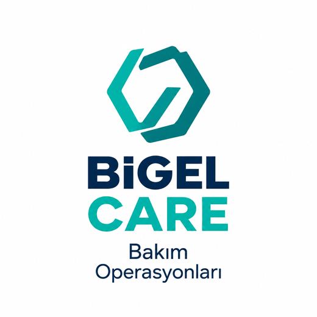

BİGEL CARE — Fiziksel alan bakımı ve saha müdahalesi
Arızayı beklemeden, sahayı koruyun.
Markaların fiziksel noktalarındaki küçük bakım, onarım ve saha müdahale ihtiyaçlarını tek merkezden yönetiyoruz. Tespit, planlama, saha uygulaması, fotoğraflama ve kapanış takibi BİGEL'de.

Küçük işler birikmeden çözülür.
Lokasyonlarda biriken küçük fiziksel problemler müşteri deneyimini ve marka görünümünü etkiler. BİGEL CARE bu işleri tek iş emri sistemiyle yönetir.
- Periyodik ve önleyici bakım
- Arıza ve fiziksel hasar müdahalesi
- Görsel alan ve marka unsurları bakımı
- Dış alan ve çevre bakımı
- Mobilya, ekipman ve küçük montaj işleri
- Acil saha müdahalesi
Yüksek uzmanlık ve yasal yetki gerektiren işler (elektrik, mekanik tesisat vb.) uygun uzmanlarla koordine edilir; BİGEL tespit, planlama ve kapanış takibini yönetir.
On modül, sektöre göre birleştirilir.
Minor Works
Vida sıkıştırma, sabitleme, kapı kolu ve aksesuar değişimi, silikon, noktasal boya.
Sign Care
Tabela, totem ve yönlendirme elemanlarının bakımı.
Exterior Care
Cephe, giriş ve dış alan bakımı.
Visual Care
Görsel alan ve marka unsurları.
Furniture Care
Mobilya ve teşhir elemanları.
Pavement Care
Zemin, bordür ve otopark bakımı.
Site Care
Lokasyon fiziksel durum yönetimi.
Preventive Care
Periyodik önleyici bakım.
Emergency Care
Acil saha müdahalesi.
Field Audit
Fotoğraflı kontrol ve aksiyon raporu.
Talepten fotoğraflı kapanışa.
Talep
Tek kanal: talep veya denetim bulgusu.
Fotoğraflı tespit
Hasar türü, öncelik ve önerilen aksiyon.
Görev onayı
Kapsam, sorumlu ve hedef tarih.
Saha müdahalesi
Bölgesel ekiple standart uygulama.
Kapanış raporu
Sonrası fotoğrafı ve kalite kontrolü.
Her sektörün fiziksel alanına göre.
Station Care
Akaryakıt istasyonları: kanopi, tabela, pompa adası, bordür, bariyer ve istasyon çevresi.
EV Charge Care
Şarj ünitesi dış gövdesi, zemin, yönlendirme ve aydınlatma dış gövdesi. Elektriksel bakım yetkili uzmanlarla.
Restaurant Care
Dış cephe, tabela, dış oturma, arabaya servis alanı ve iç mekân küçük işler.
Auto & ATM Care
Showroom cephe, sergileme platformu; ATM kabini, şube girişi ve banko.
Retail & AVM Care
Raf, teşhir ünitesi, vitrin çerçevesi; AVM yönlendirme, oturma grupları ve sezonluk dekorasyon.
Logistics & Facility Care
Depo cephe, zemin çizgileri, bariyer; otel, eğitim kurumu ve fabrika girişleri.
Saha operasyonunuzu birlikte tasarlayalım.
Pilot kapsamını seçili lokasyonlarla başlatır, sonuçlara göre bölgesel ve Türkiye geneli operasyona ölçekleriz.